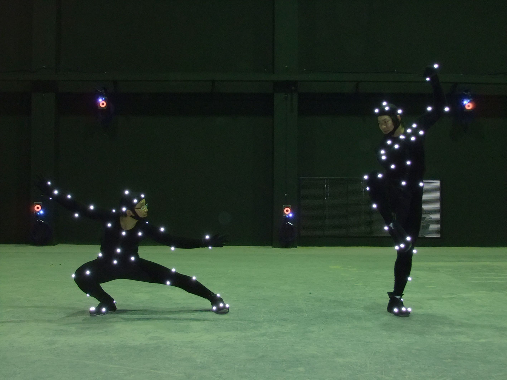
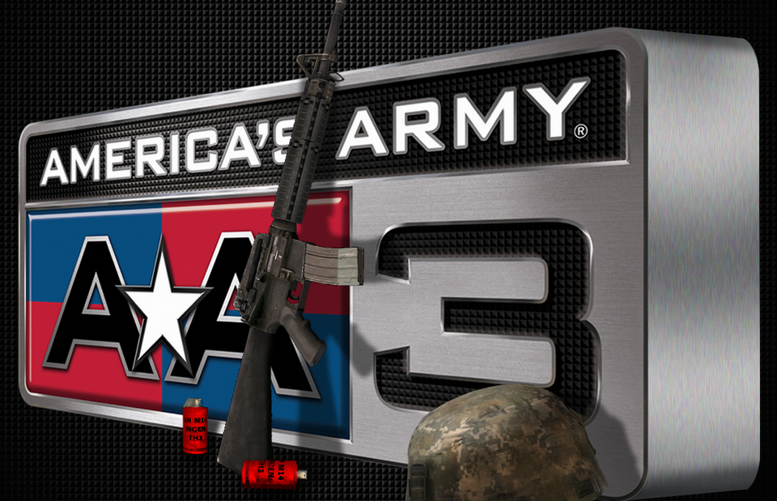
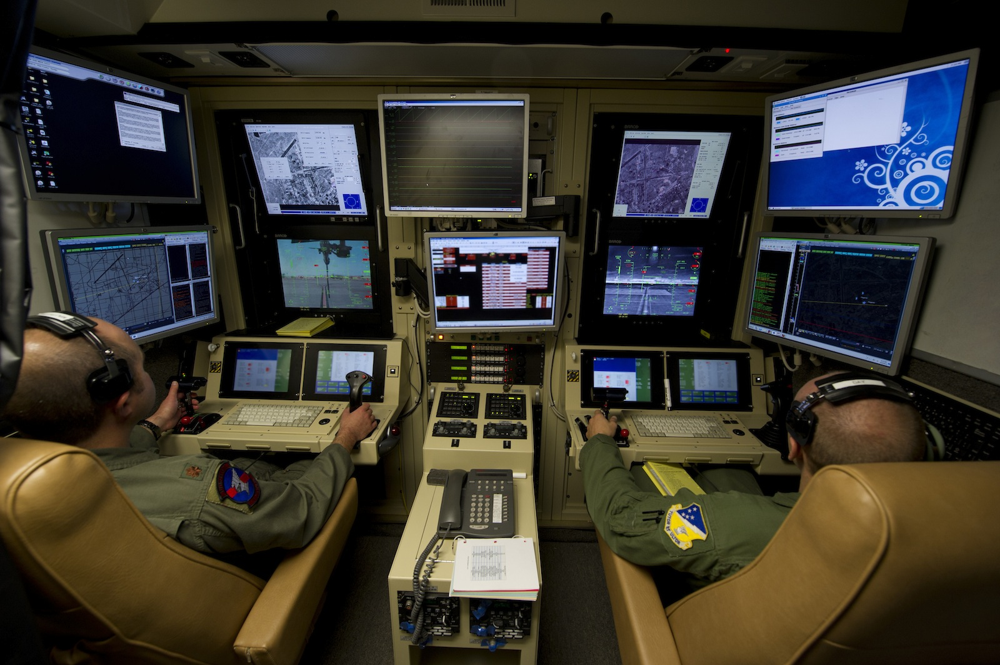

Bedienbarkeit
Spezielle Steuergeräte

"a closed formal system that represents a subset of reality" (Chris Crawford)
Computerspiele sind objektiv betrachtet unrealistisch
Durch die menschliche Fantasie wird eine subjektiv realistische daraus

Die für uns realistisch wirkende Situation eines Computerspiels entsteht in unserer Fantasie.
Je ähnlicher das Spiel der Wirklichkeit ist, desto einfacher kann sich der Spieler in sie hineinversetzen
Inhaltliche Inkonsistenz bricht die Fantasie
Anpassen des Aussehen der Spielfigur
Wahl einer zu einem passenden Rolle
Identifikation über weiter Merkmale wie Sprache
Einnehmen einer anderen Rollen
Weiterentwicklung des Charakters
Hineinversetzen in Charakter der Story
Fehleinschätzung des Jugendschutzes


